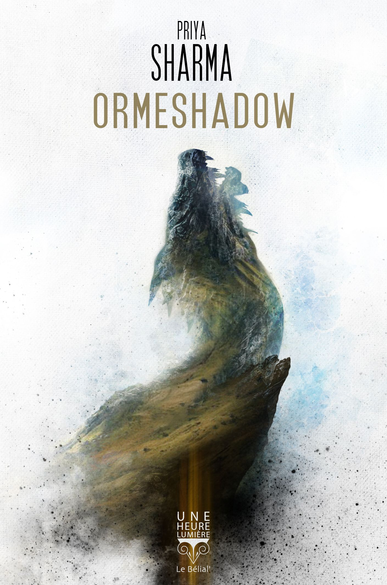

Dans la série des novellas Une Heure-Lumière, place à Ormeshadow, de la romancière britannique Priya Sharma. Nous sommes en Angleterre au XIXème siècle et ni joie, ni insouciance, ni légèreté ne figurent au programme de ce drame familial. Il s’agit en effet de la triste histoire de John et Clare Belman qui, accompagnés de leur fils unique Gideon, sont contraints de quitter leur ville pour une ferme occupée par le frère de John, Thomas, et sa famille. Ce dernier, personnage tyrannique, viriliste et cruel, leur réserve un accueil chaleureux (c’est faux). Au milieu de tensions déchirantes, Gideon profite de quelques moments avec son père, intellectuel et rêveur, pour découvrir une vieille légende familiale : une dragonne dormirait depuis des siècles sous les terres de la ferme. Avec ce contexte anxiogène, la présence fantomatique d’un potentiel univers fantastique et un enfant pris dans la tourmente, difficile de ne pas déceler quelques points communs avec Le fini des mers, évoqué ici. La comparaison s’arrête là, Ormeshadow étant beaucoup plus récente (2019) et la narration bien différente. Concrètement, c’est une histoire qui nous tient en haleine de bout en bout, sans négliger le travail sur l’ambiance (qui n’est donc : pas fun). Au passage, notons qu’avec ses 170 pages, ce récit est plutôt long au regard des standards de la collection. Toujours est-il que le simple souvenir de l’oncle Thomas me donne des maux de ventre rien que d’y penser et que, si cette histoire est particulièrement dramatique, elle est surtout très réussie.
Ormeshadow - Priya Sharma
